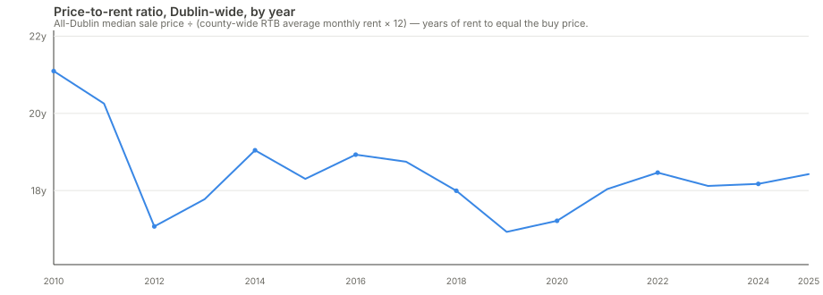
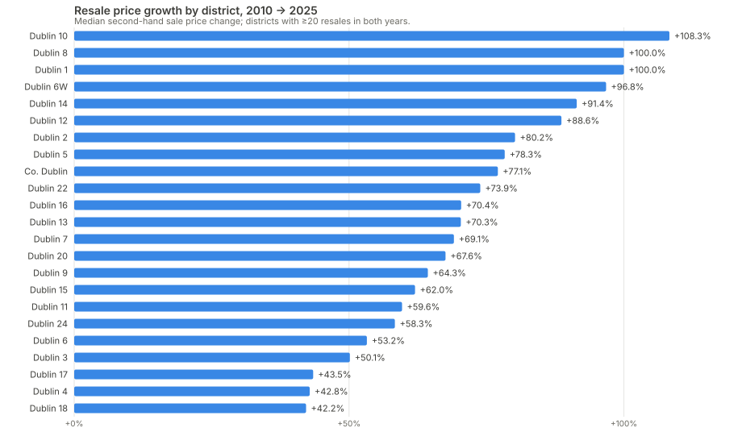
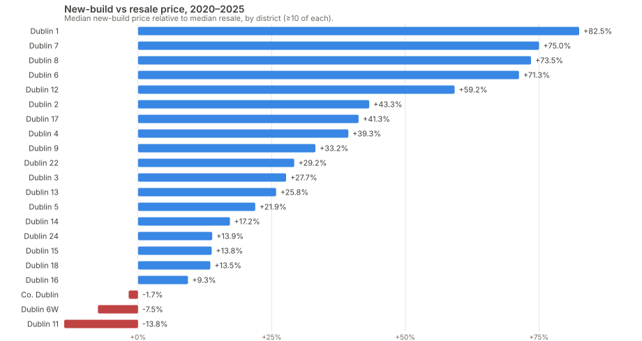

Finding 1
The common assumption is that buying has pulled further out of reach while renting stayed the "affordable" option. The data says the opposite happened. Dublin's price-to-rent ratio (median sale price divided by a year's rent) fell from 21.1 years in 2010 to 18.4 years in 2025, a drop of about 13%. That means rents grew faster than sale prices over the period, not the other way round.

This isn't the same as saying buying got cheaper. Median prices roughly doubled over the same period. Rents just grew even faster off a smaller base, particularly after 2015. The practical read: the "rent to save for a deposit" strategy has gotten measurably harder relative to just buying, if someone was in a position to do either.
Caveat: Dublin-wide rent figures come from the RTB/CSO rent index, which only publishes district-level detail up to 2021 and a county-wide figure after that (see the rent index table on the dashboard). The trend above uses the county-wide series specifically because it's the only one with continuous coverage through 2025.
Finding 2
Resale price growth 2010–2025 by district doesn't track "which areas are desirable now". It tracks the inverse of where prices started. Dublin 10 (Ballyfermot) grew 108%, the most of any district, from a 2010 median of just €157,000. Dublin 1 and Dublin 8, both inner-city, exactly doubled. Meanwhile Dublin 18, Dublin 4, and Dublin 17, three very different areas price-wise, all grew the least (42–44%), despite having little else in common except already being expensive (Dublin 4, Dublin 18) or already being cheap (Dublin 17) in 2010.

The pattern is a compression, not a reshuffling: districts that started far below the city median grew fastest in percentage terms, closing some of the gap rather than widening it. It doesn't mean the cheapest areas are now expensive in absolute terms, Dublin 10's 2025 median (€327,000) is still well under the city's, but the relative gap narrowed more than most people would guess.
Caveat: this is percentage growth, which mechanically favours a low starting base, a district going €100k → €200k reads the same as €400k → €800k. Districts with under 20 resales in either year are excluded to avoid one or two sales swinging the median.
Finding 3
Across Dublin, new-build homes sell for more than resales in the same district and time window (2020–2025), which isn't surprising on its own. What's less obvious is where the premium is largest: Dublin 1 (+83%), Dublin 7 (+75%), and Dublin 8 (+73%), all dense, older inner-city districts, not the leafy suburbs where a shiny new estate might seem most out of place next to existing housing.

The likely explanation isn't "new is worth more", it's what "new" and "resale" actually mean in each area. Inner-city resale stock is disproportionately small, old Georgian or Victorian conversions and older flats, while new-build there tends to mean modern apartment developments, a genuinely different product, not just a newer version of the same one. In suburban districts, new-build and resale housing stock are more similar in type and size, so the premium is smaller.
Caveat: some districts have very few new-build sales in this window (as low as 17 in Dublin 1), so a single high-value development can move the median. Districts with fewer than 10 sales of either type are excluded from the comparison entirely.
Finding 4
Finding 3's premiums are raw, within-district comparisons. A different question: if you pool every district together and ask "does new-build carry a premium once you already know which district and which year", the answer is a modest +1.2%, nowhere near the +83% seen in Dublin 1 alone. That's the expected result, not a contradiction: it confirms the premium is concentrated in specific districts rather than being a general "new costs more" effect across the city. Averaging over 22 very different districts dilutes a large, real, local effect into a small pooled one.
This came from a straightforward hedonic regression (log price on district, new-build/resale, and year, fit on a 15,000-row sample spanning 2015–2026) built specifically to sanity-check Finding 3, not to replace it. It also gives an independent read on price growth: controlling for district and new-build/resale mix, prices rose about 5.5% a year over that window, somewhat faster than the roughly 3.5%/year the raw 2010–2025 city-wide median implies, consistent with growth having accelerated in the more recent part of that range.
Caveat: this model explains about 23% of price variation (R² ≈ 0.23), which is honestly modest, most of what determines a home's price (size, condition, exact position within a district) isn't in this data at row level, only district, type, and year are. A first pass on the full 2010–2026 register actually produced a small NEGATIVE new-build coefficient, which turned out to be a real but different finding: new-builds sold at a discount to resale in 2010–2012 (likely distressed, unsold post-crash stock), then flipped to a premium from 2016 on. A single coefficient across both regimes averages two opposite effects into a misleading number, so this analysis is deliberately restricted to 2015 onward, the stable modern regime, rather than reporting the pooled figure.
analysis/generate-report.mjs, not hand-picked from a spreadsheet.analysis/regression.mjs, ordinary least squares via the normal equations (no external stats library), self-tested against a synthetic dataset with a known exact answer before running on real data.